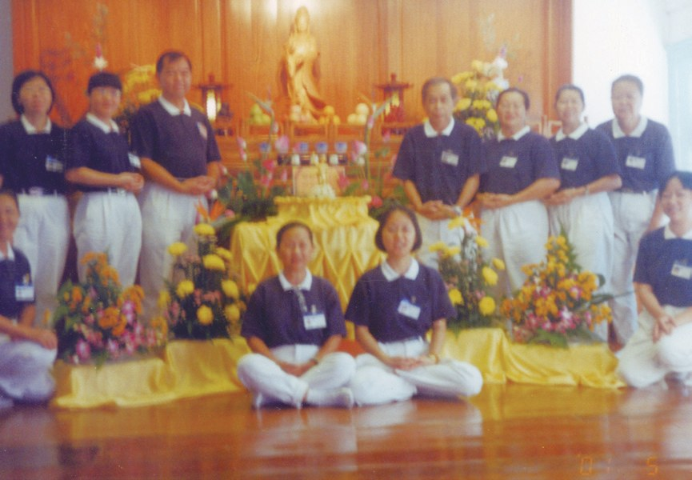
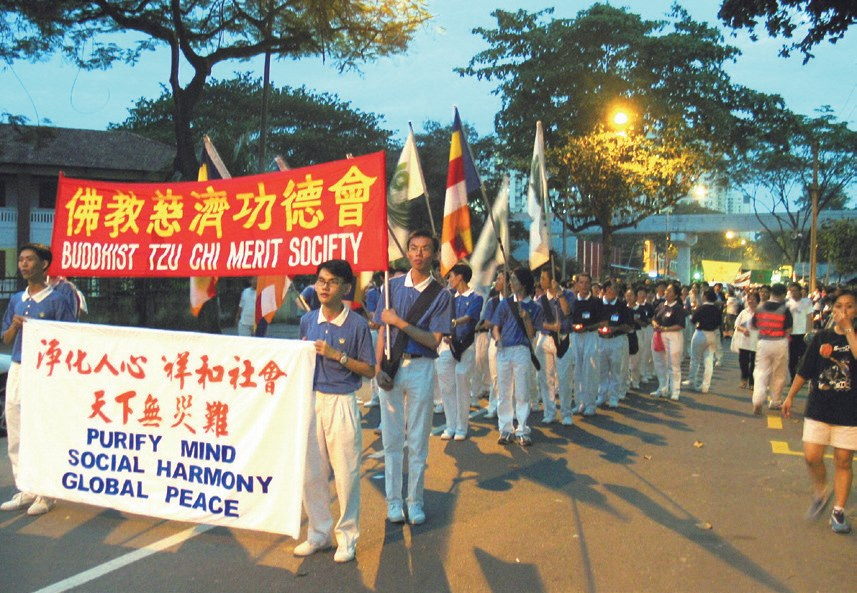
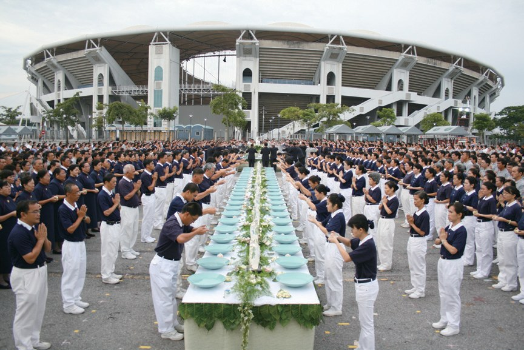
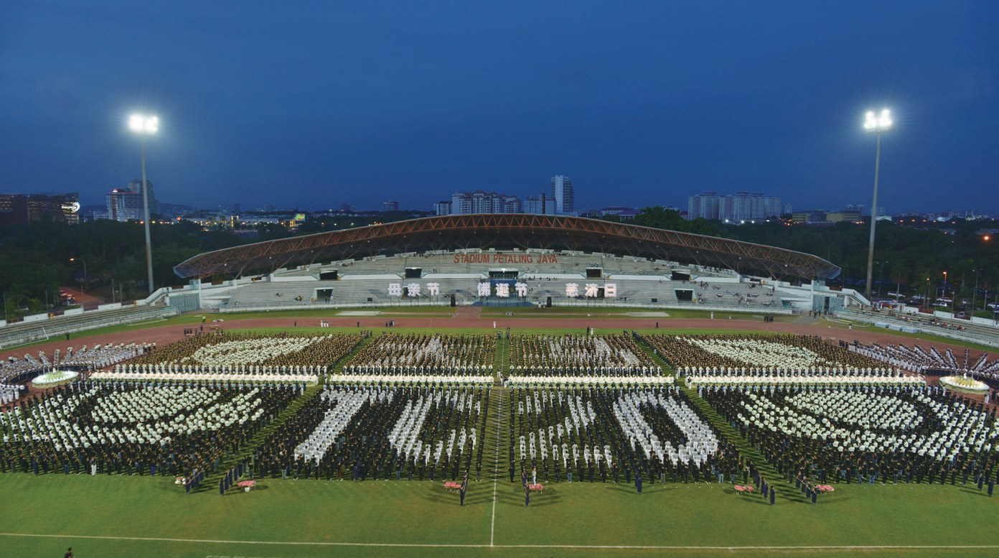
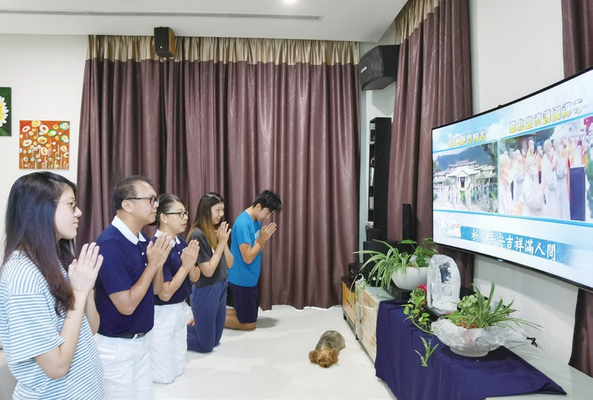
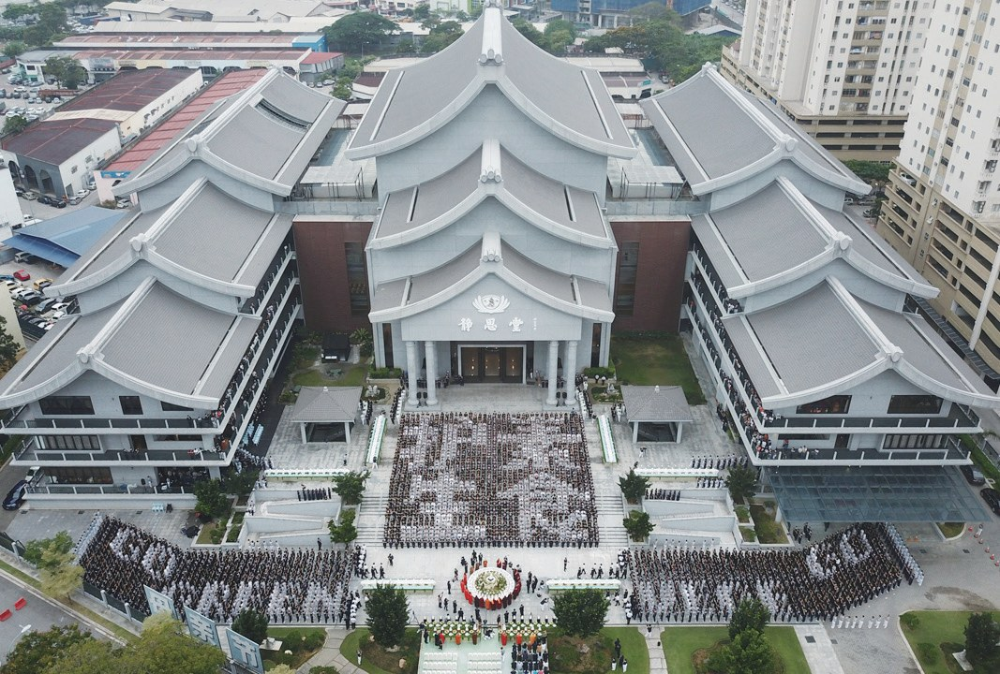
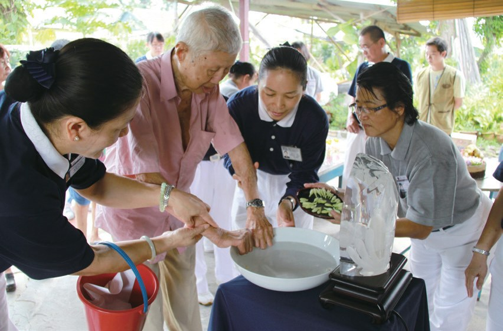
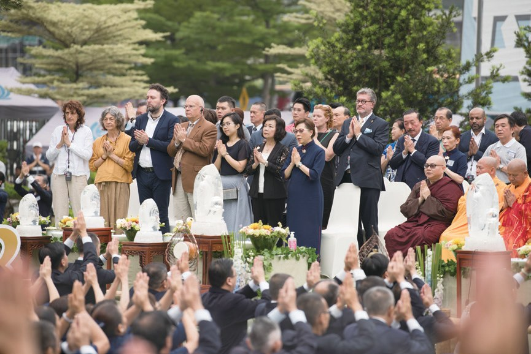

浴佛淨自心
上萬人一起浴佛，是什麼樣子？

先別急著下結論，讀完再說說你的想法～
這一篇講浴佛：佛誕日、母親節、慈濟日三節合一。從會所容不下百人的小型浴佛，到上萬人排出隊形。
你會讀到風雨中不肯離開的三千多人、在家裡浴佛的照顧戶，還有凌晨釘下的兩萬五千根鐵釘。
下面是原書的節錄，紅色底線是我們替你標出的轉折點。
讀之前：你覺得浴佛最重要的是什麼？
從小會所開始
馬來西亞的佛誕日，叫「衛塞節」。閱讀引導
1996年，慈濟三十周年慶時，證嚴上人宣布將每年五月的第二個星期日訂為「全球慈濟日」（簡稱慈濟日）。
2000年，臺灣慈濟正式將「佛誕日」、「母親節」與「慈濟日」結合，三節同慶，稱為「三節合一」。
一起慶祝！
……必須輾轉搭乘巴士才能抵達，無法舉辦較大型的活動，因此每年衛塞節都是前往其他佛教道場參與。


只好去別的道場。

由於吉隆坡慈濟志工人數增加，空間已不敷使用，於2004年3月搬遷至八打靈的格拉納再也。同年5月3日，吉隆坡慈濟人在八打靈格拉納再也的新會所舉辦浴佛典禮，並首次開放會眾參與浴佛。
風雨中不離開
2008年起，吉隆坡也辦萬人浴佛。閱讀引導
吉隆坡分會也於2008年開始，跟隨臺灣慈濟的腳步，以「萬人浴佛聚福緣」為目標，積極邀約會眾參與。

2012年5月13日，古晉慈濟人舉辦浴佛典禮。前日彩排期間，帳篷被風吹倒，浴佛臺也一片狼藉，志工急忙補救。
隔日正式浴佛時，再次遭遇狂風暴雨，但眾人並沒有退縮，在風雨中依然虔誠浴佛，讓前來參與浴佛的法師跟會眾相當感動。
「三千多人沒有一個人離開，佛像被吹倒了，他們趕緊再去扶起來，還是用感恩心。……」
上人表示・p.538
三千多人一個都沒走！
2013年雪隆分會浴佛典禮，志工以7,280人排出「大馬20」，及朵朵蓮花和菩提葉隊形，象徵慈濟在大馬已邁入二十年……

上人讚歎慈濟人在大馬的努力，能在以伊斯蘭教為主的國度，號召萬人來浴佛，並將佛教之美深植人心，實在很不簡單。
- 7,280人2013年排出「大馬20」p.539
- 兩萬多人2014年靜思堂首次對外開放p.540
- 約一萬兩千人2016年五個場次p.540
在家也能浴佛
2020年，戶外的浴佛取消了。閱讀引導

2020年5月10日，受到新冠疫情影響，為因應政府政策，慈濟雪隆分會取消往年的戶外浴佛，首推線上浴佛……
雲端浴佛對無法外出的民眾而言，縮短了彼此的距離，更安定了他們因疫情造成的不安……

心還是連在一起。
吃一餐素，畫一個勾
浴佛之前，先清淨身心。閱讀引導
2008年5月佛誕日，因為月初緬甸風災、四川地震，造成災難死傷慘重；上人慈示全球慈濟人走上街頭募款募愛，推動齋戒，引導民眾響應持素，虔誠祈求天下無災無難。
2012年，浴佛主題「日食八分飽、兩分助人好」。雪隆慈濟製作一萬支竹筒，貼上「我愛地球、我吃素」齋戒表格……
就畫一個勾！
- 一萬支竹筒貼上齋戒表格p.541
- 七千五百支後續回收的竹筒p.542

……冀望人人以自己為起點，改變飲食觀念，再如漣漪般擴散，讓身邊每一個人都茹素。
兩萬五千根鐵釘
行動不便的人，也能浴佛。閱讀引導
雪隆慈濟從2008年開始，特地為行動不便的志工、會員、照顧戶或長期關懷機構裡的病友們舉辦行動浴佛，即使不出門，仍有機會感受到沐浴在佛法中的清淨與歡喜。

慈濟關懷戶林美金因為脊椎問題，從小需要戴護頸。2010年一場手術導致她身體癱瘓，無法自主呼吸，需要依靠氧氣機輔助。
志工也安排奉茶儀式，協助林美金向母親奉茶，表達感恩之意。

還向媽媽奉茶。
巴生支會決定以「送佛、送福到家」的方式，取代浴佛典禮。

「信徒到佛寺捐錢祈求庇佑的方式，和慈濟集合萬人浴佛的方式相比，後者更可以在當下讓人們從心底生起對佛陀恭敬、信仰的心。……」
南傳戒律首座沙拉南卡拉長老表示・p.544「第一次參與佛教浴佛典禮，莊嚴禮儀讓我深感震撼。在短時間內要凝聚這麼多人的力量呈現莊嚴、整齊的圖形，真是不簡單。……」
義大利大使館塔瑪菈教授表示・p.545也被感動了。
猜一猜閱讀引導
2011年的萬人浴佛，為了排出圖騰，志工用了多少根鐵釘當作地標？
……因為場地只租借兩天的時間，第一天凌晨動員一百二十位志工，在五小時內完成釘地標……

全部釘好！
慈濟每年舉辦三節合一的目的，是希望藉助有形的節日和浴佛隊形，接引大眾親近佛教，喚醒清淨自性，珍惜佛法在人間……
停一停：誰讓你記住了？閱讀引導
選一位你印象最深的人。沒有標準答案。
有人在風雨中不肯離開，有人在家裡向媽媽奉茶，有外國客人第一次浴佛，有人凌晨去釘地標。哪一位讓你最有感覺？

一起回頭看看吧～
回望
依本章原文整理，每一條都標了原書頁碼。閱讀引導
背後原因
為什麼要排隊形

小川浴佛就好，為什麼要上萬人排圖形？
- 萬人參與
以萬人浴佛聚福緣為目標，積極邀約。p.537
- 隊形有意義
每一年的隊形呈現不同的意義。p.538
- 接引大眾
藉助節日和隊形，接引大眾親近佛教。p.546
後續發展
浴佛一路走來

小禾從會所的小型浴佛到雲端浴佛，經過了多少年？
- 1996
上人訂立「全球慈濟日」。p.535
- 2001.5.7
莎亞南會所首辦浴佛。p.536
- 2004.5.3
首次開放會眾參與浴佛。p.537
- 2008
吉隆坡開始萬人浴佛。p.537
- 2014.5.11
靜思堂首次對外開放，兩萬多人前來。p.539–540
- 2020.5.10
首推線上浴佛。p.540
浴佛的轉變
以前和後來
小川浴佛這些年，有什麼不同？
- 會所容納不到百人靜思堂吸引兩萬多人p.535、540
- 前往其他佛教道場參與自己舉辦萬人浴佛p.536–537
- 以志工和孩子為主開放會眾參與p.536–537
- 大家到現場浴佛送佛、送福到家p.543
以上只整理本章寫到的事；書裡沒寫到的，我們不替它下結論。
回頭看讀前的選擇閱讀引導
萬人排出莊嚴的隊形（p.537）；參加者以齋戒素食表達虔誠（p.546）；三節合一是希望喚醒清淨自性（p.546）。場面和人數都是助緣，最重要的是那分虔誠。
三千多人為什麼沒有一個人離開？
只有你自己看得到喔！
準備好了就一起出發～